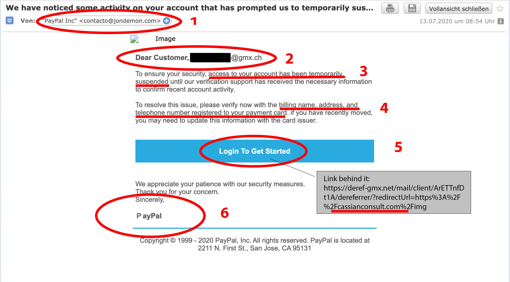

Réactions
Si malgré toutes les précautions entretenues vous êtes tout de même victimes
d'une de ces attaques ; ne paniquez pas et surtout ne cédez à aucun chantage les étapes à
suivres sont simples :
- Se débrancher d'internet et du réseau de l'entreprise.
- Ne pas payer -> alimente le réseau cibercriminel.
- Prendre le temps.
- Contacter les autorités compétentes.
- Trouver un décrypteur.
- Modifier les mots de passes.
- Prévenir les personnes touchées par cette attaques.
Bien sûr, la solution à privilégié est bien évidemment de faire appel
à un informaticien ou quelqu'unde compétent dans le domaine

voici typiquement un faux site internet